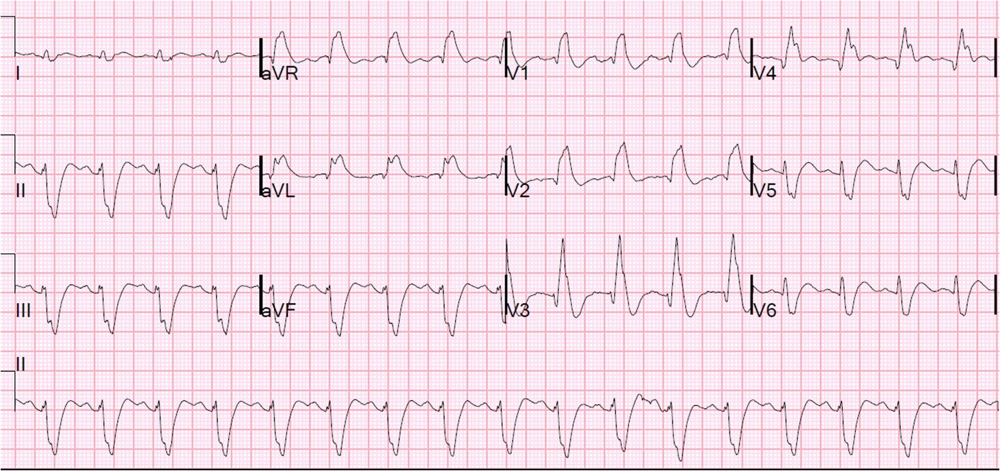
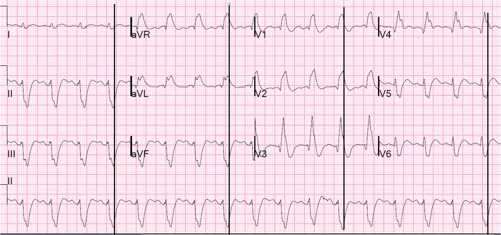
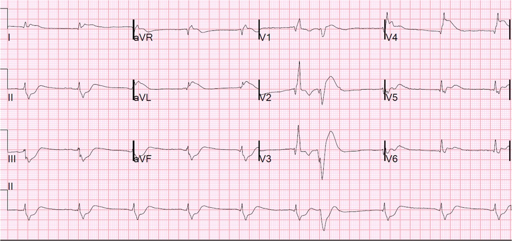

06/04/2013 — 68 phút ép tim, hồi phục hoàn toàn. Kèm các khuyến cáo của hội đồng 5 thành viên về ngừng tim.
Bản dịch tiếng Việt của bài "68 minutes with chest compressions, full recovery. Plus recommendations from a 5-member panel on cardiac arrest." – Dr. Smith’s ECG Blog. Giữ nguyên toàn bộ 3 hình ảnh của bản gốc.
Câu chuyện sau đây được kể với sự cho phép đầy đủ của bệnh nhân, một nhân viên cấp cứu ngoài viện, đồng thời là người sáng lập, sở hữu và cùng vợ điều hành một công ty đào tạo hồi sinh tim phổi. Anh đã dạy hồi sinh tim phổi cho hơn 100.000 người. Và anh là một người tuyệt vời. Đây là câu chuyện của anh:
Gần nửa đêm một ngày tháng Mười Hai, nhân viên cấp cứu ngoài viện 56 tuổi rất khỏe mạnh và cường tráng này đang đi làm nhiệm vụ với một ca nguy kịch thì người đồng nghiệp đi cùng phát hiện anh bất tỉnh ở ghế trước của xe cứu thương. Người đồng nghiệp lập tức bắt đầu ép tim bằng tay và gọi trợ giúp. Anh được xác định là đang rung thất và đã được khử rung 4 lần, không thành công. Sau vài phút ép tim bằng tay, thiết bị LUCAS (ép tim cơ học) được lắp vào. Do cứng hàm, không thể đặt nội khí quản cho anh nên anh được thông khí bằng bóng-van-mặt nạ. Anh được dùng 1 mg epinephrine và 300 mg amiodarone mà vẫn không khử rung được.
Khi đến khoa cấp cứu (ED), anh đang ngừng tim hoàn toàn và đang được ép tim bằng thiết bị LUCAS. Đến thời điểm này anh đã ngừng tim được 30 phút. Độ bão hòa O2 là 70%, có dạng sóng. Anh được dùng succinylcholine và đặt nội khí quản, và thiết bị ngưỡng hít vào (ResQPod) được gắn vào đầu ống nội khí quản. Thông khí chậm được điều chỉnh theo đèn báo nhịp trên ResQPod. Siêu âm tim liên tục cho thấy tim co bóp tốt theo mỗi lần ép. Hồi sinh tim phổi được tạm ngừng rất ngắn và nhịp là rung thất, không thấy hoạt động của tim trên siêu âm.
Anh được dùng 1 mg epinephrine, 3g calci gluconat, 100 mEq bicarbonat và 100 mg lidocaine. Vào khoảng phút thứ 40 (10 phút tại khoa cấp cứu), mg epinephrine thứ 2 (thứ 6 tính chung) và 2 g MgSO4 được tiêm. Máy theo dõi xác nhận rung thất và anh được khử rung lần nữa, chuyển về nhịp xoang. Thiết bị LUCAS được tạm dừng. Siêu âm cho thấy tim hoạt động tốt và mạch bắt mạnh.
Sau khi tái lập tuần hoàn tự nhiên thành công, phòng thông tim (cath lab) được kích hoạt dựa trên giả định rằng đây sẽ là một biến cố mạch vành (xác suất lớn hơn 50% ngay cả khi chưa có điện tâm đồ 12 chuyển đạo).
Một điện tâm đồ 12 chuyển đạo đã được ghi:


Có ST chênh lên kèm theo RBBB và LAFB hay không? Để biết được, bạn phải tìm điểm kết thúc của QRS.
Trong ca này, điểm đó thấy rõ nhất ở chuyển đạo V1, và nếu bạn kẻ một đường thẳng xuống
chuyển đạo II, nằm dọc theo phần dưới cùng của bản ghi, bạn có thể xác định điểm kết thúc của
QRS ở II. Sau đó bạn có thể tìm điểm kết thúc của QRS ở mọi chuyển đạo, như
dưới đây:


Ca bệnh tiếp diễn:
Rung thất tái phát ngay sau khi ghi điện tâm đồ (tổng thời gian ở nhịp đều là 2 phút.) Thiết bị LUCAS được khởi động lại. Tiêm 100 mg lidocaine. Khử rung lần nữa, không đáp ứng. Tiêm 100 mEq bicarbonat, 40 U vasopressin, 1 mg epinephrine. Tạm dừng LUCAS một lúc ngắn thì thấy hoạt động điện vô mạch (PEA) với phức bộ QRS rộng, không thấy hoạt động của tim trên siêu âm. Rồi bệnh nhân lại trở về rung thất. Anh được khử rung lần nữa về nhịp xoang chỉ được một lát, rồi lại rung thất.
Đến lúc này chúng tôi nhận ra mình đang đối mặt với rối loạn nhịp thất dai dẳng liên tục (incessant), còn gọi là “cơn bão điện” (electrical storm), một tình trạng hầu như chỉ gặp trong thiếu máu cục bộ nặng/STEMI. Trước đây chúng tôi đã thành công khi chẹn beta bằng esmolol (thuốc tác dụng ngắn và có thể ngừng nếu gây sốc tim), vì vậy chúng tôi tiêm bolus 40 mg (500mcg/kg) esmolol và bắt đầu truyền liên tục 4 mg/phút (50 mcg/kg/phút). Chúng tôi tiêm thêm 3 g calci, 1 mg epinephrine và 1 mg atropine.
Kết quả khí máu tĩnh mạch: pH = 7,05/pCO2 = 101/pO2 = 25 (nhớ là máu tĩnh mạch)/HCO3 = 27. Lactat là 12,8 mEq/L. Tiêm thêm 50 mEq bicarbonat. Bệnh nhân được khử rung lần nữa sau 38 phút ở khoa cấp cứu, tức 68 phút kể từ lúc ngừng tim. Anh chuyển về nhịp xoang. Tạm dừng LUCAS. Siêu âm tim cho thấy tim có hoạt động nhưng phân suất tống máu kém. Bắt đầu điều trị hạ thân nhiệt.
Một điện tâm đồ ghi lại được thực hiện trong lúc chờ kíp thông tim đến:


Anh được dùng aspirin và heparin rồi chuyển lên phòng thông tim, tại đây chỗ tắc LAD đoạn gần được tái thông. Một bóng đối xung động mạch chủ (IABP) đã được đặt.
Có những vấn đề hồi sức tích cực khó khăn gồm sốc, sức cản mạch hệ thống thấp và cung lượng tim kém, cùng với viêm phổi. Ngày hôm sau phân suất tống máu là 25% và troponin I đỉnh là 250 ng/ml.
48 giờ sau ngừng tim, anh đã tỉnh và làm theo y lệnh. Trong vòng vài ngày, vợ anh không còn nhận thấy khác biệt nào so với mức hoạt động thường ngày của anh. Anh đã hồi phục hoàn toàn về thần kinh.
Phân suất tống máu của anh 3 tháng sau là 40% và anh có thể đi được 14 phút trong nghiệm pháp gắng sức theo phác đồ Bruce (hầu hết người bình thường thậm chí không làm được như vậy). Anh sẽ sớm quay lại làm việc.
Dr. Brian Driver, bác sĩ nội trú năm thứ 4 chuyên ngành cấp cứu/nội khoa tại Trung tâm Y tế Hạt Hennepin (Hennepin County Medical Center), đã tập hợp một hội đồng gồm 5 thành viên để thảo luận chủ đề: Ngừng tim: Những đổi mới và Thực hành tốt nhất.
Các thành viên hội đồng:
- Dr. Brian Mahoney, giám đốc đội cấp cứu ngoài viện (EMS) của HCMC và nghiên cứu viên phụ trách điểm nghiên cứu HCMC trong thử nghiệm ResQTrial. EMS của HCMC thuộc nhóm có tỷ lệ hồi sức thành công cao nhất cả nước (chỉ số Utstein năm 2010, trước khi dùng LUCAS, = 49%, tỷ lệ hồi sức thành công chung = 17%)
- Dr. Demetris Yannopoulos, bác sĩ can thiệp tại Đại học Minnesota, đồng thời là nhà nghiên cứu ngừng tim rất năng suất tại Quỹ Nghiên cứu Y khoa Minneapolis (MMRF). Ông và Dr. Keith Lurie thực hiện những công trình tuyệt vời tại phòng thí nghiệm đó.
- Dr. Mark Sprenkle, thuộc Khoa Hô hấp và Hồi sức tích cực tại HCMC
- Dr. Gautam Shroff, bác sĩ tim mạch cơ hữu, HCMC
- Dr. Steve Smith của Dr. Smith’s ECG Blog, bác sĩ cấp cứu cơ hữu tại HCMC
Dr. Driver đã viết bản tóm tắt ngắn gọn về buổi thảo luận của hội đồng như sau:
Hồi sinh tim phổi chất lượng cao có vai trò then chốt trong
ngừng tim, và có thể làm tăng tỷ lệ
khử rung thành công và tỷ lệ sống còn.(1)
Hồi sinh tim phổi cần được thực hiện với độ sâu ép tim hai inch, tần số 100
lần mỗi phút, để lồng ngực nảy lên hoàn toàn sau mỗi lần ép.
Hồi sinh tim phổi lý tưởng có thể khó
duy trì khi ép tim bằng tay, và những tiến bộ công nghệ gần đây đã
giúp các thiết bị như LUCAS có thể ép tim cơ học chất lượng cao,
kéo dài, với tần số và độ sâu thích hợp.
Các nghiên cứu đang được tiến hành để xác định tác động của LUCAS lên tỷ lệ sống còn
sau ngừng tim.(2,3) Vì hồi sinh tim phổi chất lượng cao đã được biết là cải thiện kết cục,
kết quả nhiều khả năng sẽ khả quan.
Van ngưỡng trở kháng
(ITD) là một biện pháp hỗ trợ mới khác trong ngừng tim. Thiết bị này
tạm thời ngăn dòng khí đi
qua bóng-van-mặt nạ hoặc ống nội khí quản trong lúc lồng ngực giãn ra
(pha giãn của hồi sinh tim phổi), nhờ đó làm tăng áp lực âm trong lồng
ngực, tăng máu tĩnh mạch trở về và tăng cung lượng tim. Thử nghiệm ResQTrial,
so sánh hồi sinh tim phổi tiêu chuẩn với phối hợp hồi sinh tim phổi ép-giãn chủ động (ACD-CPR)
kèm ITD, đã cải thiện tỷ lệ sống còn sau ngừng tim từ 6% lên 9%.(4) Một
thử nghiệm khác dùng ITD trong ngừng tim trước viện không cho thấy lợi ích, nhưng các kết luận
rút ra từ dữ liệu này bị hạn chế vì việc đặt ITD bị chậm trễ.(5) Có một số dữ liệu từ thử nghiệm này đã được thảo luận và càng ủng hộ việc dùng ITD, nhưng chưa thể công bố ở đây, vì dữ liệu sẽ được công bố vào tháng Bảy năm 2013 và hiện đang bị cấm công bố trước (embargo). Nên dùng ITD phối hợp với hồi sinh tim phổi
ép-giãn chủ động để tận dụng trọn vẹn lợi ích của việc lồng ngực giãn nở nhiều hơn
cùng với áp lực âm trong lồng ngực được tăng cường.
Tăng thông khí gây chết người: trong lúc ngừng
tim, nó tạo ra áp lực dương quá mức trong lồng ngực và làm giảm máu tĩnh mạch
trở về và cung lượng tim. Trên mô hình động vật, tăng thông khí đi kèm với
giảm áp lực tưới máu mạch vành và giảm tỷ lệ sống còn.(6) Bệnh nhân ngừng
tim cần được thông khí với tần số 10 nhịp thở mỗi phút.
Epinephrine, dù có mặt trong
thuật toán ngừng tim của ACLS và được dùng hằng ngày khắp thế giới,
chưa bao giờ được chứng minh là cải thiện tỷ lệ sống đến khi ra viện. Lợi ích của
epinephrine hiện chỉ giới hạn ở việc làm tăng tỷ lệ tái lập
tuần hoàn tự nhiên. Epinephrine có khả năng gây hại; trong một nghiên cứu lớn gần đây
của Nhật Bản được thực hiện tốt, việc dùng epinephrine trước viện trong
ngừng tim đi kèm với giảm tỷ lệ sống còn và giảm kết cục chức năng sau
1 tháng.(7) Liều tốt nhất và khoảng cách thời gian dùng epinephrine
chưa được xác định, nhưng vì những dữ liệu gần đây này, sẽ là thận trọng nếu giảm thiểu tổng lượng
epinephrine dùng trong ngừng tim. Các nghiên cứu mới về những liệu pháp
như nitroprusside, nhằm tối ưu hóa lưu lượng máu thay vì huyết áp, là
cực kỳ hứa hẹn, nhưng mới chỉ được chứng minh trên mô hình động vật.(8)
(Có nhiều liệu pháp mới khác đang được tích cực nghiên cứu tại phòng thí nghiệm MMRF, đặc biệt bởi Dr. Yannopoulos và Dr. Lurie). Bệnh nhân của chúng tôi đã nhận 8 mg epinephrine và sống sót. Epinephrine đã đóng góp bao nhiêu vào việc hồi sức thành công của anh, nếu có?
Trong các trường hợp rung
thất hoặc nhịp nhanh thất kháng trị, chẹn beta có thể làm giảm mất ổn định điện học. Người ta có thể lo rằng nó sẽ góp phần gây sốc tim, nhưng nghịch lý là nó có khả năng cải thiện sức co bóp cơ tim bằng cách làm giãn trạng thái co gần như liên tục
của thất trái (LV) và tình trạng hẹp van hai lá cơ năng
do epinephrine gây ra. Nhờ đó nó có thể cải thiện sự đổ đầy và tống máu của LV. Có một số
báo cáo ca bệnh, như ca này, trong đó esmolol và các thuốc chẹn beta khác đã nhanh chóng
cắt rung thất kháng trị và đi kèm với ROSC.(9,10)
Chắc chắn cần cân nhắc nghiêm túc việc dùng thuốc chẹn beta
trước khi ngừng các nỗ lực hồi sức ở một bệnh nhân bị rối loạn nhịp thất
dai dẳng liên tục.
Ngoài ra, có một số báo cáo ca bệnh trong đó ngay cả
chẹn beta cũng không hiệu quả, nhưng khi thực hiện phong bế hạch sao
trái tại giường thì rung thất được cắt ngay lập tức.(11-13)
Một bài viết gần đây mô tả chi tiết thủ thuật này có thể xem tại đây:
Lên phòng thông tim trong khi vẫn đang ép tim? Cuối cùng, những bệnh nhân ngừng tim
ngay tại khoa cấp cứu và không thể hồi sức thành công vẫn có thể sống sót nếu được chuyển, với
hồi sinh tim phổi cơ học liên tục, lên phòng thông tim để tái lập
dòng chảy cho động mạch vành bị tắc. Trong buổi thảo luận của hội đồng, câu hỏi
được đặt ra là liệu can thiệp mạch vành qua da (PCI) có dễ thực hiện hơn
khi không có nhiễu chuyển động do ép tim hay không, và về lợi ích của việc
khởi động oxy hóa máu qua màng ngoài cơ thể (ECMO) để tạo điều kiện
thủ thuật lý tưởng (14). Dr. Yannopoulos, một bác sĩ tim mạch
can thiệp và là nhà nghiên cứu hồi sức hàng đầu, cho rằng việc dành thời gian
để đặt ECMO không có lợi vì PCI hoàn toàn có thể thực hiện trong khi đang ép
tim. ECMO có thể được đặt tại phòng thông tim hoặc tại
ICU sau thủ thuật, nếu có chỉ định. PCI trong lúc
hồi sinh tim phổi cơ học có lẽ chỉ hợp lý khi thời gian từ lúc ngừng tim đến lúc
can thiệp cực kỳ ngắn.
Cuối cùng, mọi bệnh nhân hôn mê do ngừng tim đều nên được điều trị hạ thân nhiệt (điều này đã được khẳng định vững chắc đến mức không cần bàn thêm).
Những điểmCHÍNH:
• Hồi sinh tim phổi chất lượng cao có vai trò then chốt.
Ép tim cần sâu 2” (inch) với tần số 100 lần/phút, để lồng ngực
nảy lên hoàn toàn sau mỗi
lần ép.
• Hồi sinh tim phổi cơ học có thể giúp
ép tim chất lượng cao, kéo dài.
• Hồi sinh tim phổi
ép-giãn chủ động kèm ITD đã làm tăng có ý nghĩa tỷ lệ sống còn trong
ngừng tim. Hai biện pháp
hỗ trợ này luôn nên được dùng cùng nhau để tối đa hóa lợi ích.
• Tăng thông khí gây tử vong. Bóp bóng
với tần số 10 nhịp thông khí mỗi phút.
• Epinephrine không có lợi ích nào có ý nghĩa lâm sàng
được ghi nhận ngoài ROSC,
và có thể gây hại. Tổng
liều epinephrine trong ngừng tim nên được hạn chế.
• Nên dùng esmolol hoặc các thuốc chẹn beta khác
trong rung thất
kháng trị, và có thể dẫn tới
ROSC nhanh chóng. Phong bế hạch sao trái dưới hướng dẫn siêu âm
là lựa chọn sau cùng cho
rối loạn nhịp thất vẫn tồn tại sau khi đã dùng mọi liệu pháp khác.
Hãy dùng điều trị hạ thân nhiệt!
TÀI LIỆU THAM KHẢO
1.
Wallace, S. K., Abella, B. S. & Becker, L. B. Quantifying the Effect of
Cardiopulmonary Resuscitation Quality on Cardiac Arrest Outcome: A Systematic
Review and Meta-Analysis. Tạp chí Circulation: Cardiovascular Quality and Outcomes 6,
148–156 (năm 2013).
2.
Rubertsson, S. và cs. The study protocol for the LINC (LUCAS in cardiac
arrest) study: a study comparing conventional adult out-of-hospital
cardiopulmonary resuscitation with a concept with mechanical chest compressions
and simultaneous defibrillation.
Tạp chí Scandinavian
Journal of Trauma, Resuscitation and Emergency Medicine 21, 5 (năm 2013).
3.
Perkins, G. D. và cs. Prehospital randomised assessment of a mechanical
compression device in cardiac arrest (PaRAMeDIC) trial protocol. Tạp chí Scandinavian
Journal of Trauma, Resuscitation and Emergency Medicine 18, 58
(năm 2010).
4.
MD, P. T. P. A. và cs. Standard cardiopulmonary resuscitation versus
active compression-decompression cardiopulmonary resuscitation with augmentation
of negative intrathoracic pressure for out-of-hospital cardiac arrest: a
randomised trial. Tạp chí Lancet 377, 301–311 (năm 2011).
5a. Aufderheide, T. P. và cs. Standard cardiopulmonary resuscitation versus active compression-decompression cardiopulmonary resuscitation with augmentation of negative intrathoracic pressure for out-of-hospital cardiac arrest: a randomised trial. Tạp chí Lancet 2011;377(9762):301-11.
5b.
Aufderheide, T. P. và cs. A trial of an impedance threshold device in
out-of-hospital cardiac arrest. Tạp chí N. Engl. J. Med. 365, 798–806
(năm 2011).
6.
Aufderheide, T. P. — bài: Hyperventilation-Induced Hypotension During Cardiopulmonary
Resuscitation.
Tạp chí Circulation 109, 1960–1965 (năm 2004).
7.
Hagihara, A. và cs. Prehospital epinephrine use and survival among patients
with out-of-hospital cardiac arrest. Tạp chí JAMA 307, 1161–1168 (năm 2012).
8.
Yannopoulos, D. và cs. Sodium nitroprusside enhanced cardiopulmonary
resuscitation improves survival with good neurological function in a porcine
model of prolonged cardiac arrest. Tạp chí Critical
Care Medicine 39, 1269–1274 (năm 2011).
9.
Miwa, Y. và cs. Effects of Landiolol, an Ultra-Short-Acting β1-Selective
Blocker, on Electrical Storm Refractory to Class III Antiarrhythmic Drugs. Tạp chí Circ
J 74, 856–863 (năm 2010).
10.
Srivatsa, U. N., Ebrahimi, R., El-Bialy, A. & Wachsner, R. Y. Electrical
Storm: Case Series and Review of Management. Tạp chí Journal of Cardiovascular
Pharmacology and Therapeutics 8, 237–246 (năm 2003).
11.
Loyalka, P. và cs. Left stellate ganglion block for continuous
ventricular arrhythmias during percutaneous left ventricular assist device
support. Tạp chí Tex Heart Inst J 38, 409–411 (năm 2011).
12.
Patel, R. A., Priore, D. L., Szeto, W. Y. & Slevin, K. A. Left stellate
ganglion blockade for the management of drug-resistant electrical storm. Tạp chí Pain
Med 12, 1196–1198 (năm 2011).
13.
Nademanee, K., Taylor, R., Bailey, W. E., Rieders, D. E. & Kosar, E. M.
Treating Electrical Storm : Sympathetic Blockade Versus Advanced Cardiac Life
Support-Guided Therapy. Tạp chí Circulation 102,
742–747 (năm 2000).
14.
Kagawa E và cs. Should we emergently revascularize occluded coronaries for
cardiac arrest? Rapid-response extracorporeal membrane oxygenation and
intra-arrest percutaneous coronary intervention. Tạp chí Circulation năm 2012,
ngày 25 tháng Chín; 126:1605.